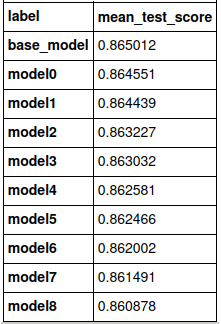
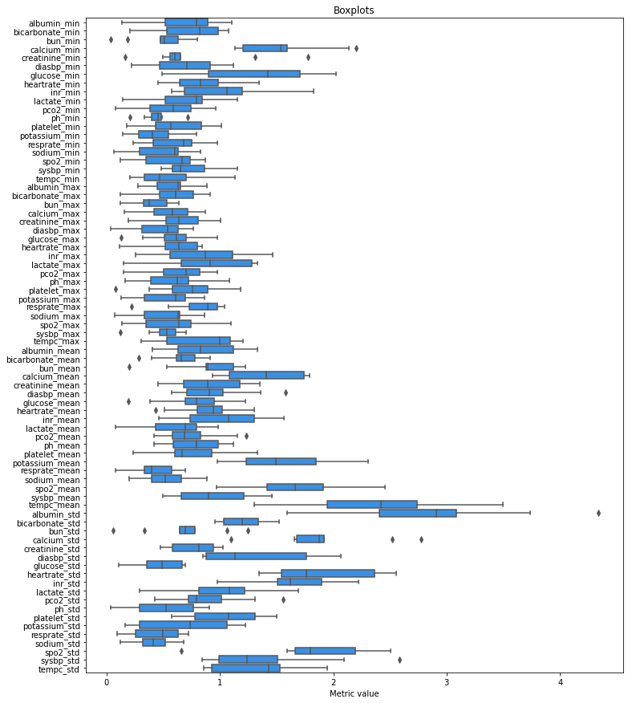
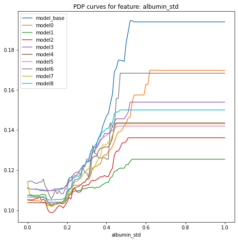

6.1 Topic
Authors: Adrian Stańdo, Maciej Pawlikowski, Mariusz Słapek (Warsaw University of Technology)
6.1.1 Abstract
Technological advances were early adopted by healthcare with great benefits and developments. In many health-related realms machine learning is crucial such as: development of new medical procedures, the treatment of chronic diseases, the management of patient records and data. Explainable AI (XAI) gives invaluable tools in healthcare for understanding the models by humans. The aim of this article is to compare PDP profiles for a Rashomon set with a given metric. Following we use five different metrics of distance function and based on that we compare PDP curves. Additionally, the library in the Python language has been created, which automates this research. We have observed that the created models, which have similar scores, have different variable importances. In this paper these differences were measured and assessed to understand better the problem of predicting hospital mortality using data from MIMIC-III.
6.1.2 Literature review
Rashomon is a intriguing Japanese movie in which four people witness an incident from different vantage points. When they come to testify in court, they all report the same facts, but their stories of what happened are very different. In machine learning Rashomon set is used to characterise problem in which many different models offer accurate results describing the same data. However, not every accurate model gives a right conclusion as described in (Breiman and others 2001): “If the model is a poor emulation of nature, the conclusion might be worng”. Herein authors also explain basics of Rashomon sets on example. Much more in depth and mathematical description is provided in (Semenova et al. 2019). Another important topic related to Rashomon sets is analysing the feature importance of the model. It was described in this article (Fisher et al. 2019b), where authors suggested to study the maximum and minimum of variable importance across all models included in the Rashomon set. This technique was called MCR (Model Class Reliance). Furthermore, (Dong and Rudin 2020) presented technique to visualise the “cloud” of variable importance for models in the set, which could help us understand the Rashomon set and choose the one which give the best interpretation. The last question stated in the article (Rudin et al. 2021) was about choosing model from the Rashomon set. It might be a difficult task, especially when we lack good exploration tools. (Das et al. 2019) created a system called BEAMS that allows to choose the most important features. Next, the program searches the hypothesis space in order to find model which fits best to given constraints. Since this system works only with linear regression classifiers, (Rudin et al. 2021) stated a question if it is possible to design a simmilar system which will search only models within the Rashomon set.
6.1.3 Results
6.1.3.1 Results of models search

6.1.4 Best models

6.1.4.1 Boxplots of abs_sum metric for the best models

6.1.4.2 Boxplots of abs_sum metric for each feature

6.1.4.3 PDP curve for albumin_std

6.1.4.4 PDP curve for atempc_min